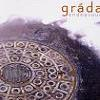

Celtic Lyrics Corner > Artists & Groups > Gráda > Endeavour
|  |
Endeavour
(2004) |
| Tracks : |
1.
Cathain
2. Pint Of Reference 3. Biodegrádable 4. Swallow 5. Anto's Gambit 6. Diamantina Drover 7. Madam I'm A Darling 8. Out In Otaki 9. Once Loved A Boy 10. Snow Leopard 11. Mini Minor 12. Endeavour |